GuhitKudlit
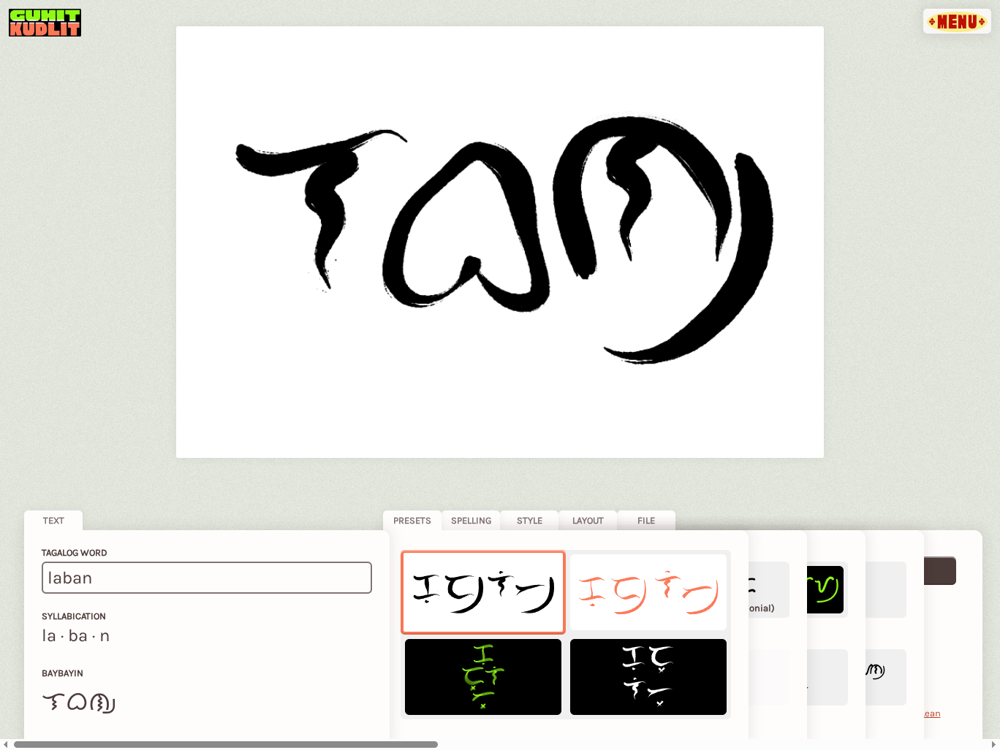
Baybayin calligraphy generator
GuhitKudlit is a webapp that generates Baybayin calligraphy.
Baybayin is an ancient writing system used in the Philippines, mostly for the Tagalog language. I’ve always been fascinated by Philippine languages, and this project was just another fruit of that curiosity.
Project detailsOpen the app- released
- 2023
- role
- creator
- platform
- Web
- tech
- JS
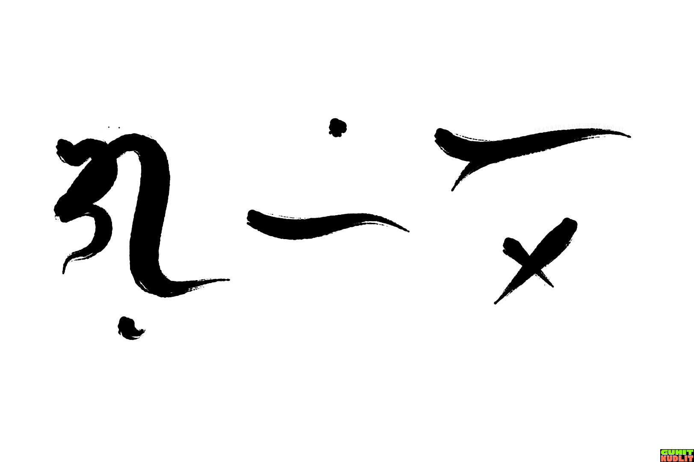
Output of GuhitKudlit for the word ‘guhit’
The name comes from ‘guhit’ meaning line or drawing, and ‘kudlit’ meaning tick or small mark.
You see, Baybayin is an abugida and in Baybayin, the kudlit is used to signify the vowel of a character.
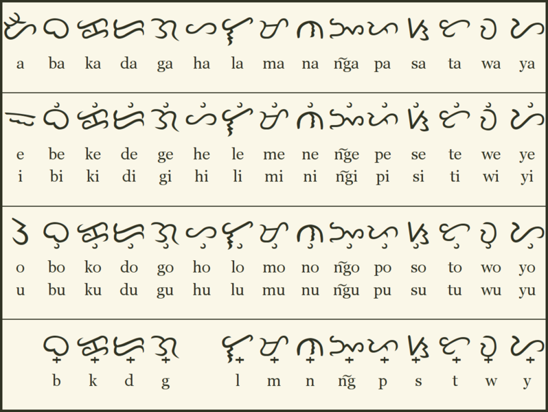
Chart of Baybayin characters from Wikimedia
The program is divided into two functions: transliteration and calligraphy. The transliteration process converts ASCII input to Baybayin glyphs, and the calligraphy function draws those glyphs onto the canvas using vanilla JS.
Transliteration
The transliteration algorithm that converts ASCII text to Baybayin glyphs is quite simple (or should I say, simplistic?). It processes the input letter-by-letter, and produces output one syllable at a time.
This works great for Tagalog words, not so much for English which has arbitrary rules on syllables & pronunciation. Thus, the converter was only intended to primarily work in Tagalog.
For example, Tagalog doesn’t have a letter for the “j” sound. The transliteration function deliberately does not handle these cases to avoid misspellings and false assumptions. If you attempt to put in foreign letters, an error will stop you.
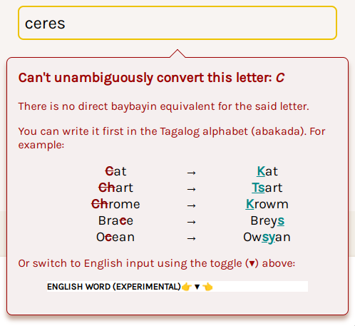
One thing I’ve noticed in other Baybayin converters online was that their outputs were opaque. That is, if you can’t read Baybayin, you can’t verify the output. This would sometimes trick people into getting silly mispelled tattoos and stuff. While that’s their fault for being ignorant, we can do better.
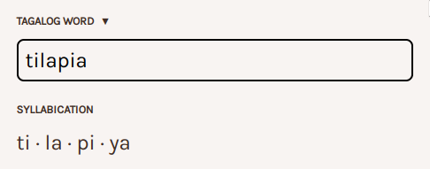
GuhitKudlit makes the transliteration process transparent by showing the resulting syllabication, which one-to-one maps to Baybayin glyphs. This should allow users to double-check their results and make adjustments.
The module had a single-file test suite:
import { baybayin } from "./baybay.mjs";
dapat(baybayin("aso")).ay(["a", "su"]);
dapat(baybayin("pusa")).ay(["pu", "sa"]);
dapat(baybayin("araw")).ay(["a", "da", "w"]);
dapat(baybayin("elepante")).ay(["i", "li", "pa", "n", "ti"]);
dapat(baybayin("bantay")).ay(["ba", "n", "ta", "y"]);
dapat(baybayin("daan")).ay(["da", "a", "n"]);
dapat(baybayin("doon")).ay(["du", "u", "n"]);
dapat(baybayin("biik")).ay(["bi", "i", "k"]);
dapat(baybayin("kailan")).ay(["ka", "i", "la", "n"]);
dapat(baybayin("baon")).ay(["ba", "u", "n"]);
dapat(baybayin("baul")).ay(["ba", "u", "l"]);
dapat(baybayin("kain")).ay(["ka", "i", "n"]);
dapat(baybayin("upuan")).ay(["u", "pu", "a", "n"]);
// Bigkas na iba sa baybay
dapat(baybayin("ng")).ay(["na", "ng"]);
dapat(baybayin("mga")).ay(["ma", "nga"]);
// ...
The transliteration process is just one half of the program. It took me a a while to code it, but what I really wanted to make was the drawing algorithm. While transliteration is essential for a good user experience, the real show starts with the calligraphy algorithm.
Calligraphy algorithm
Once we have a sequence of Baybayin glyphs, we can start drawing them on the canvas.
The calligraphy algorithm went through a few major revisions. V1 was the proof of concept, it simply drew each glyph one by one with no planning ahead. There was a discarded v2 based on Daniel Berio’s autocalligraphy papers using control theory but it did not really work out (generated trajectories too unstable). So here we are with v3 (which is what is now the published v2) based on simple Bezier curves.
The current calligraphy algorithm goes like this (heavily simplified):
- Layout: Glyphs are laid out in 2D space with kerning.
- Composition: Glyph strokes are reshaped to create an organic composition of individual strokes.
- Drawing: A simulated brush is continuously pulled along the canvas following the strokes of the each glyph.
The base glyph shapes themselves were hardcoded Bezier curve paths authored by hand. I used to have a separate authoring app for the old v2. But now it’s just easier to hardcode the handful of Baybayin glyphs once.
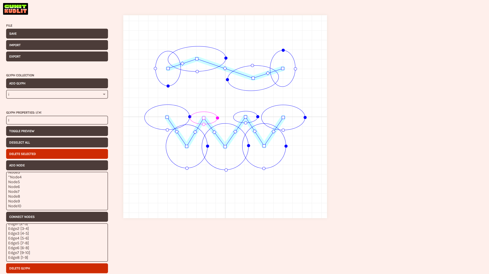
Discarded glyph vector authoring experience
This does mean there could only be one way each glyph is drawn (a.k.a stroke order? font?). The later steps do give variety, even if base glyphs stay the same. Maybe glyph variation could be a new feature.
The layout algorithm uses a grid system where each glyph is subdivded into N×5 cells (5 rows, variable columns). By stamping glyphs side-by-side like a jigsaw puzzle, checking cell occupancy, a crude kerning solution is achieved.
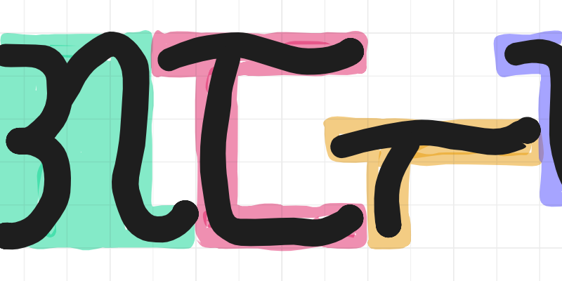
The composition optimiser runs a kind of a particle simulation where vertices attract and repel each other according to dozens of rules. This was the hardest to get right as it was often unstable. It took a lot of number tweaking and debugging to get decent results.
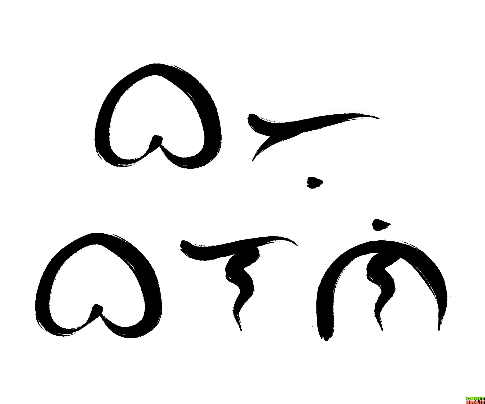
Tightly packing glyphs like the above is just one calligraphy style. There are others like intentionally overlapping glyphs, overlapping strokes, extending ‘tail’ swish strokes. For now, GuhitKudlit just does simple packing. I hope to revisit the composition and layout algorithms someday for more variety.
There are currently three brush styles, Paint brush, Spray paint, and Flat nib.
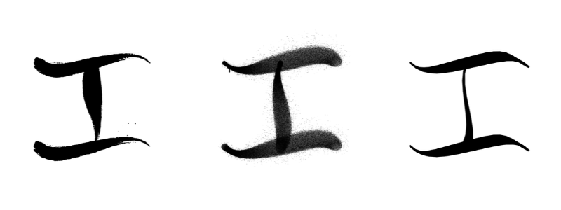
In the previous v1 version, all brush types used to be one implementation just with different constants. Now they are individually implemented which opened up very different kinds of brush styles. I enjoyed adding the little details in these brush implementations.
App logo
The logo was based on the Cubao font from the designer Aaron Amar. The colors and the layout were supposed to resemble handpainted jeepney signage.
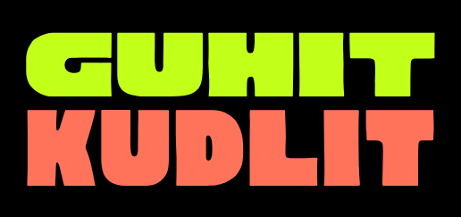
V1 logo
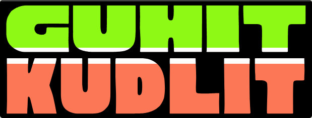
V2 logo
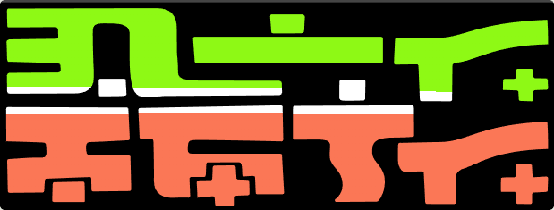
V2 logo Baybayin version
For the Baybayin version, I quickly drew it via Krita and Affinity so it’s not as polished as the Latin character version that used the Cubao font. Which is fine, these are supposed to be handpainted signs anyway. I even tried to emulate the traditional process (start with the letter colors, then paint the negative spaces with black):
V2 logo Baybayin version timelapse
End note and gallery
This project started as a proof-of-concept but is now getting regular visitors. Seeing outputs of this in the wild gives me motivation to improve it further. I hope the new version is even more useful to people.
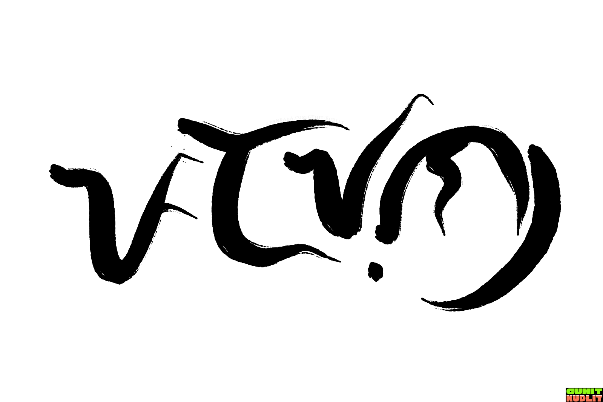
This post wouldn’t be complete without writing the now-clichéd word ‘padayon’ in Baybayin.
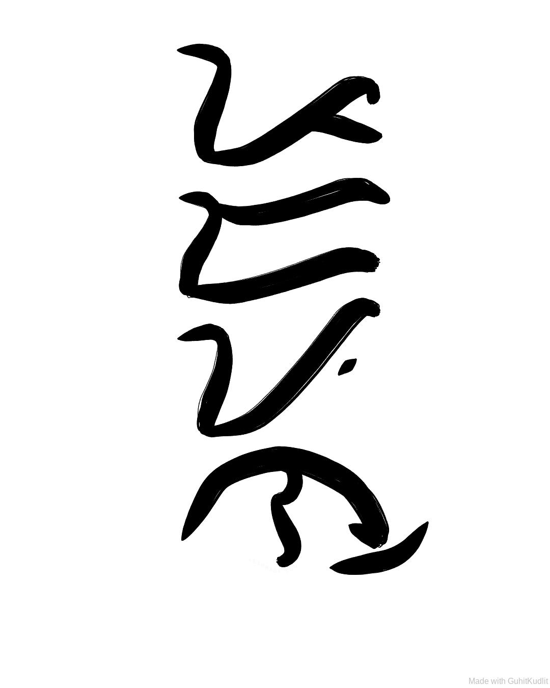
This was how v1 outputs used to look like.
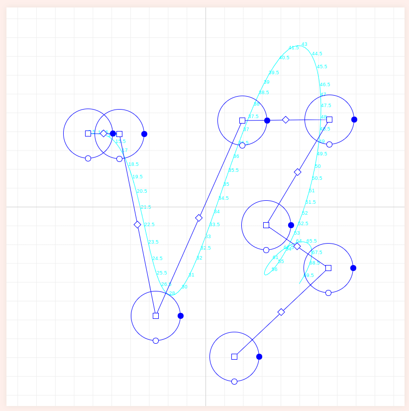
The old v2 unstable ‘physics-based’ approach.
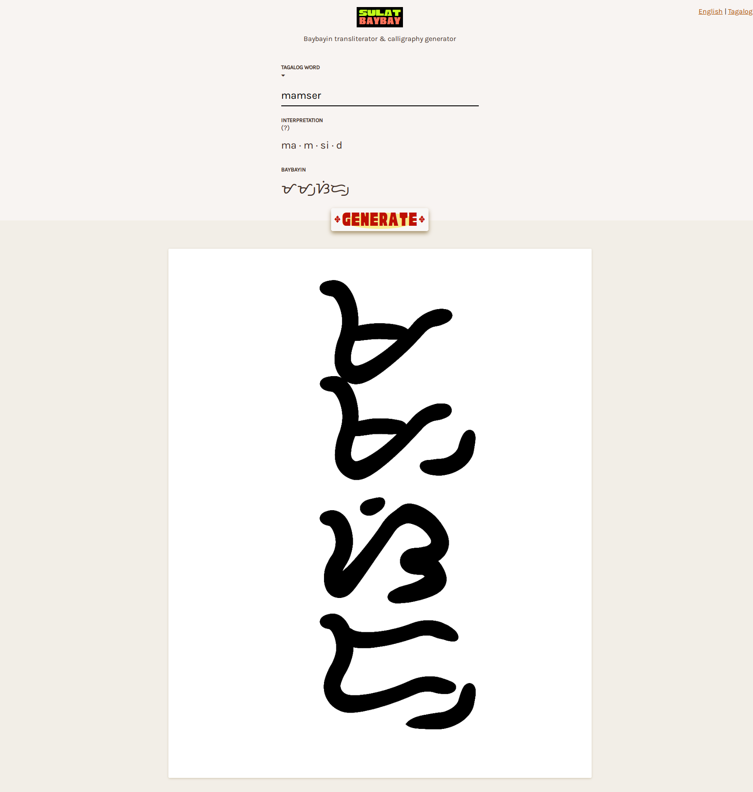
Unreleased pre-v1 WIP. App name wasn’t decided yet here!
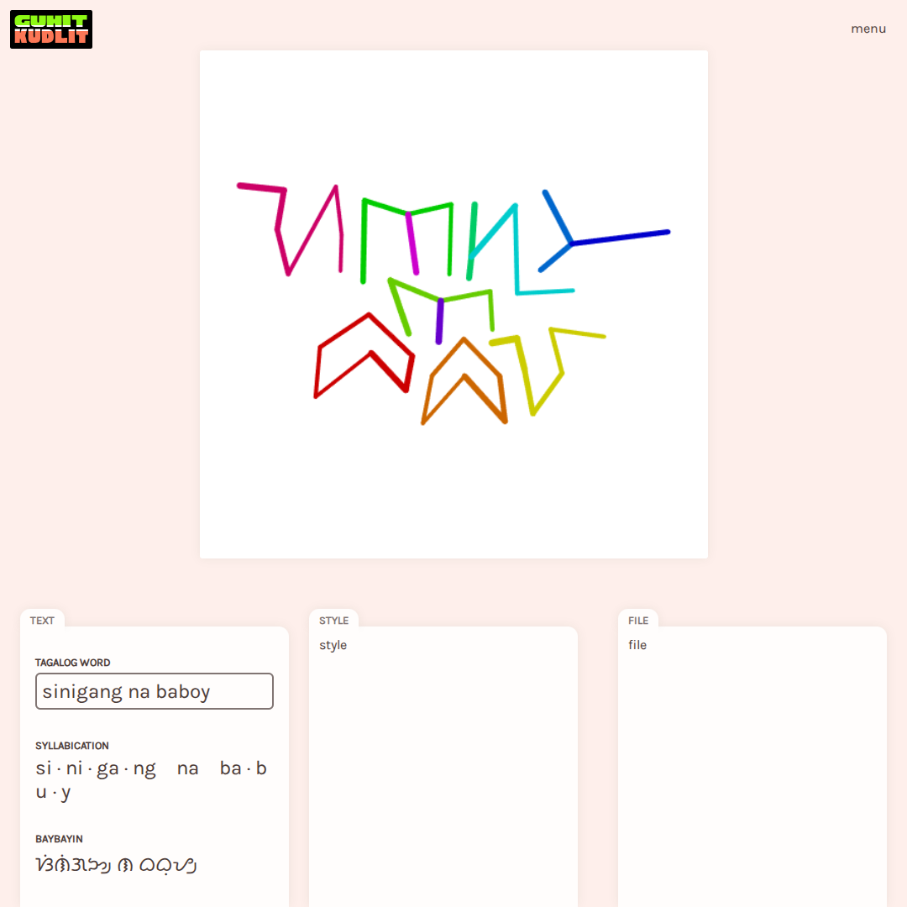
V2 WIP. Composition algorithm debug view.